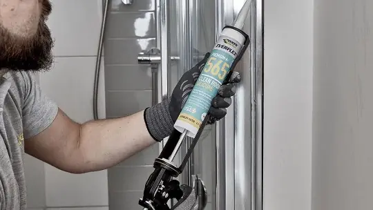
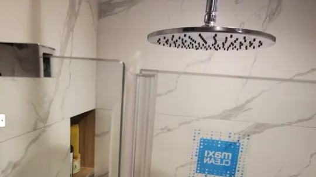
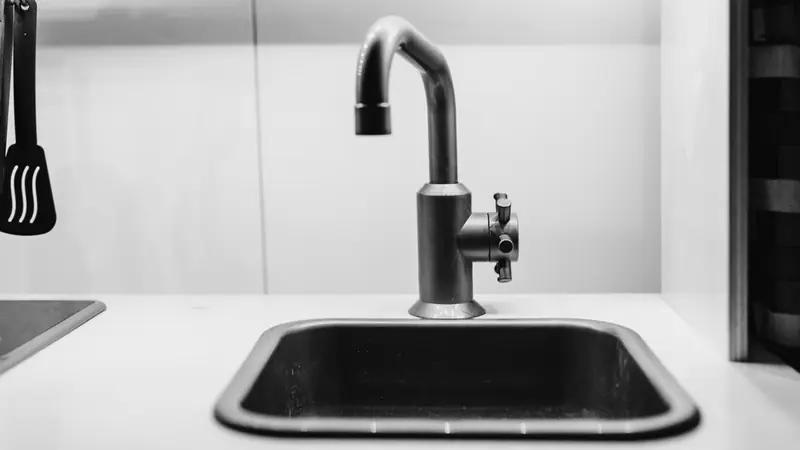
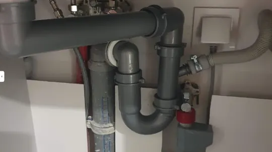

★★★★★
Veľmi príjemný pán, ktorý vykonal skvelú prácu. Potreboval som vymeniť 2 batérie v kúpeľni. Zavolal som vo štvrtok večer a v piatok ráno som ich mal vymenené. Cenu a presný čas sme si dohodli telefonicky.
MMarianDúbravka

Silikónová škára je posledná bariéra medzi vodou a konštrukciou. Keď zlyhá, škoda nevzniká na povrchu, ale za obkladom.
Silikón nezostarne rovnomerne. Najskôr sa v ňom usadí pleseň, potom sa v rohoch odtrhne od podkladu a vznikne vlásočnica, ktorou voda vsakuje pod vaňu. Zvonku pritom škára môže vyzerať ešte celkom prijateľne.
Prelakovať alebo pretlačiť nový silikón cez starý je najčastejšia chyba, akú vidíme. Nový materiál nemá na čom držať a pleseň pod ním pokračuje. Preto starú škáru vždy kompletne odstránime, podklad vyčistíme, odmastíme a necháme vyschnúť.
Až potom nanášame nový sanitárny silikón s protiplesňovou prísadou a stiahneme ho do rovnomernej škáry. Rozdiel je vidieť aj po rokoch — a hlavne nie je cítiť.
Potrebujete túto službu? Zavolajte a poviem cenu vopred.
0940 790 083Tri kroky od zavolania po hotovú prácu.
Kompletne, nie len povrchovo. Nový silikón nanesený na starý nemá na čom držať a pleseň pod ním rastie ďalej.
Podklad musí byť suchý a čistý, inak škára do roka odskočí v rohoch.
Použijeme sanitárny silikón s protiplesňovou prísadou a škáru stiahneme do rovnomerného tvaru.
Cenu poviem vopred po tom, ako mi problém opíšete. Nasledujúce veci sú v nej vždy zahrnuté — nedoúčtovávame ich dodatočne.
Dojazd aj cenová ponuka sú zadarmo. Samotná práca sa oceňuje individuálne, pretože rozdiel medzi drobnou opravou a väčším zásahom býva zásadný.
Za dojazd ani za obhliadku u nás neplatíte.
Dojazd k zákazníkovi v Bratislave
Nezáväzne a vopred po telefóne
Podľa druhu a rozsahu práce
Cenu poviem vopred — stačí zavolať.
0940 790 083Hodnotenia z Google od ľudí z Bratislavy.
Veľmi príjemný pán, ktorý vykonal skvelú prácu. Potreboval som vymeniť 2 batérie v kúpeľni. Zavolal som vo štvrtok večer a v piatok ráno som ich mal vymenené. Cenu a presný čas sme si dohodli telefonicky.
Ďakujem za rýchlu a profesionálnu výmenu batérie. Čo bolo tiež super, batériu som si nemusela sama kupovať — pán vodár ju bol kúpiť sám a ja som si vybrala na základe fotiek a konzultácie s ním.
Do hodiny od nahlásenia závady sa v sobotu dostavil pán Tomasz a promptne zabezpečil opravu splachovača Geberit aj s náhradnými dielmi k modelu, ktorý sa už dlhšie nevyrába.
Na čo sa nás pri tejto službe pýtate najčastejšie.
Často to riešime pri jednej návšteve spolu.

Sprchový kút je zariadenie, kde sa každá nepresnosť pri montáži prejaví vodou na podlahe. Preto je dôležité, kto ho osádza.

Drez a umývadlo vyzerajú ako stolárska práca, ale všetko podstatné sa deje pod nimi — v pripojení na vodu a odpad.

Sifón je najlacnejšia súčiastka pod umývadlom a zároveň tá, ktorá pri zlyhaní narobí najviac škody na skrinke a podlahe.
Robíme ju v celej Bratislave — vyberte svoju mestskú časť.
Neviete si vybrať? Zavolajte a poradím.
0940 790 083Najrýchlejšie je zavolať. Ak vám to teraz nevyhovuje, nechajte číslo a ozveme sa my.
Náš špecialista vám zavolá späť do 15 minút.